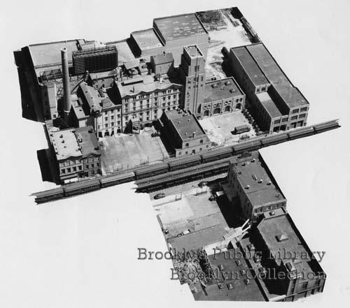

View on Flickr

Original Dutch Towns of Brooklyn

Bushwick Church 1711. Source: NYPL

Page from William D. Faulkner Account Books, 1779
During the Revolutionary War, New York City brewer William D. Faulkner (active from 1772 to 1790) sold beer to both the Continental and British armies. Source: New York Historical Society

Bakers Tavern 1842
Flatbush Ave and Atlantic Ave. Long Island Railroad on the left.

Bushwick beer tavern 1895

Huber Hittleman Brewery ad

1909 New York Sun brewery ads
Liebmann's (Bushwick), Otto Huber (Bushwick), Ulmer (Bushwick), Trommer's (Bushwick), Excelsior (Bushwick)

William Ulmer Brewery

Cover of Egon Eisenhauer, Auf Flügeln des Gesanges die Deutschlandreise des Arion von Brooklyn
(Translation: On the Wings of Song, the German story of Arion of Brooklyn) Source: F. Wiedner Printing & Publishing Company, 1908

Theobald Mark Engelhardt (1851–1935)
One of Brooklyn’s most prolific architects and designer of many iconic buildings such as William Ulmer Brewery complex, Arion Hall, Northside Savings Bank, and Eberhard Faber Pencil Factory.

Lipsius Cook House
670 Bushwick Ave. at Willoughby Ave.

Rheingold ad

Liebmann & Sons (Rheingold Brewery)
36 Forrest Street
Liebmann & Sons (Rheingold Brewery)
36 Forrest Street

Liebmann & Sons (Rheingold Brewery)
36 Forrest Street

Liebmann & Sons (Rheingold Brewery)
view north

Liebmann & Sons (Rheingold Brewery)
view south

Liebmann & Sons (Rheingold Brewery), detail

Gablingers Beer Paper Ad
Gablinger's Diet Beer (begun at Liebmann and Sons) appeared in 1967, thanks to the work of Joseph Owades, who found a way to remove starch, carbs and thus calories from beer. He shared the recipe with a friend at Meister Brau, which followed thereafter. Miller bought Meister Brau in 1972 and launched Miller Lite in 1975, supported with "Tastes Great, Less Filling," the iconic campaign created by McCann-Erickson.

Leonard Eppig
592 Bushwick Ave. and Melrose St.

Schaefer Brewery 1842

Schaefer Brewery 1942

Schaefer Brewery, Brooklyn

Schaefer Brewery, Brooklyn (detail)

Schaefer Brewery building today

Trommer's Evergreen Brewery & Restaurant
Bushwick Ave. and Conway St. Brooklyn

Trommer's Evergreen Brewery & Restaurant
Bushwick Ave. and Conway St. Brooklyn

Brooklyn Bridge From Above
Near the Manhattan entrance, with street cars and horse-drawn vehicles and pedestrians visible, 1898.

Arion Hall
1908 Brooklyn Postcard

Portrait of Interboro Brewery Brewmaster Reid

Excelsior Brewing Co. Building
Pulaski Street near Sumner Avenue

Trommer's Evergreen Brewery & Restaurant
Bushwick Ave. and Conway St. Brooklyn

Trommer's fleet
One of the largest fleets of trucks ever assembled for the distribution of a single product was pressed into service April 6th at the famous Trommer Brewery, Bushwick Avenue and Conway Street, for the filling of thousands of orders. Photo shows George Trommer (right), president of the brewery, smashing a bottle of beer to launch the fleet of trucks. Source: Brooklyn Public Library, Brooklyn Collection

Excelsior Brewery 1948
Photo is showing the abandoned brewery. It had closed in 1938 and would be torn down in just a few years, sometime in the 1950s.

Eurich Brewery Calendar 1900
Wyckoff Avenue at Halsey Street. This brewery passed through several changes of ownership and as many names: Leibinger & Oehm (1887-1895), Conrad Eurich (1899-1903) and finally, the Elm Brewing Company, which went out of business in 1907. All the proprietors used the hand-and-axe symbol. The Brooklyn border (Bushwick/Ridgewood) is just behind of the buildings.

Joseph Fallert's Brewery Calendar 1896
Meserole St. and Lorimer St.

Joseph Fallert's
Meserole St. and Lorimer St.

Joseph Fallert's
Meserole St. and Lorimer St.

Joseph Fallert's
Meserole St. and Lorimer St.

Joseph Fallert's
Meserole St. and Lorimer St.

Joseph Fallert's Daily Eagle ad 1897
"Alt-Bayerisch (old Bavarian) beer. A dark beer especially brewed and bottled for family use where a strengthening and healthy beverage is necessary. It's a food."

Teddy's
Berry St. and N 8th St.

Prohibition 1930

Chas. Schaefer Corp. and Otto Huber trucks
Huber Hittleman Brewery ad
Meserole St. from Bushwick Ave. to Waterbury St.

Huber Hittleman Brewery

Huber Hittleman Brewery

Schafer and Rheingold merch!